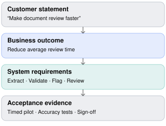
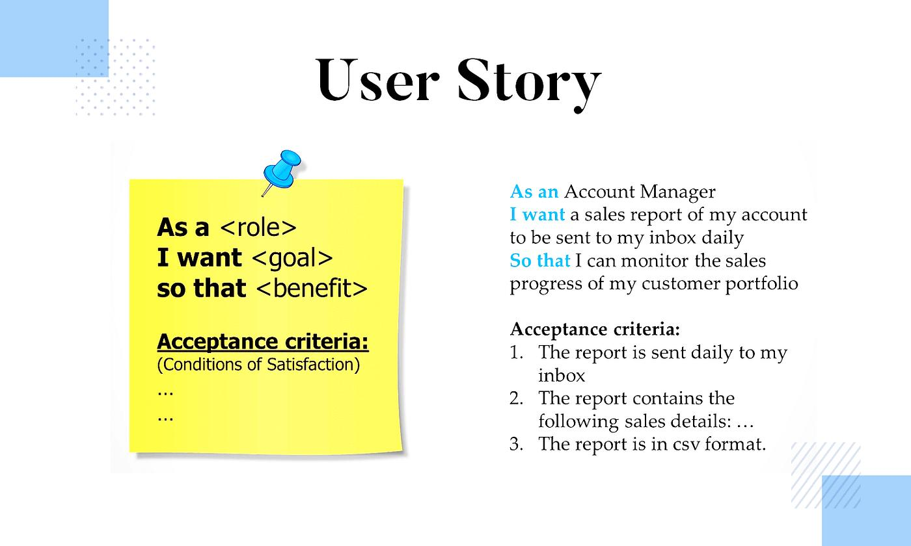
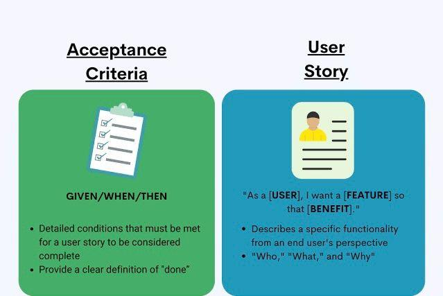

Intermediate
90–110 min
Requirements engineering
Chapter overview
You're an FDE assigned to Meridian Bank. After the discovery call from Chapter 7, the operations director says:
"We want an AI solution that makes document reviews faster, integrates with our systems, and is accurate enough for our analysts to trust."
This sounds like a reasonable project description.
But imagine handing it to three engineers. They might build three completely different solutions.
One builds an autonomous agent that approves documents. Another builds a document extraction API. The third builds a dashboard where analysts manually review AI-generated results.
All three might claim to have fulfilled the request.
The problem is that the customer has expressed an aspiration, not an implementable specification.
Your job as an FDE is to transform that aspiration into a shared, testable agreement about what the system must do, how well it must work, what it must not do, and how everyone will know whether it succeeded.
Learning objectives
By the end of this chapter, learners should be able to:
Convert vague customer statements into clear, verifiable requirements.
Distinguish business objectives, functional requirements, nonfunctional requirements, and constraints.
Write effective user stories and acceptance criteria.
Identify missing edge cases, assumptions, dependencies, and decision owners.
Define integration contracts and data requirements.
Maintain traceability from customer problems to implementation and testing.
Negotiate scope without silently accepting new commitments.
8.1 Why requirements engineering matters for FDEs
A traditional SWE may receive a refined ticket with a description, acceptance criteria, and technical context.
An FDE may receive something closer to:
"Our onboarding process is broken."
"We need real-time reporting."
"Make our document reviews 70% faster."
"Build an AI agent that handles exceptions."
"It needs to work with our legacy platform."
Each statement contains ambiguity.
For example, "real-time" could mean updates within one second, 30 seconds, five minutes, or simply before the next business decision.
"Accurate" could refer to exact field matching, correct business decisions, low false-negative rates, or reviewer confidence.
The FDE must turn these words into something engineers can implement and stakeholders can validate.
From ambiguity to implementation

The goal is not maximum documentation. It is enough shared precision to build, test, deploy, and evaluate the right solution.The cost of unclear requirements
Ambiguity creates problems that may not appear until late in delivery.
For example, a team might discover during user acceptance testing that "automated review" was understood by the business sponsor as automatic loan approval, while engineering understood it as extracting and flagging document values.
That is not merely a missing feature. It is a fundamental disagreement about system responsibility.
A good requirement prevents expensive misunderstandings before they become code.
8.2 The four layers of requirements
One of the most important skills for an FDE is classifying customer needs correctly.
1. Business requirements
Describe the outcome the organization needs.
Example: Reduce the average financial document review time from a verified baseline of 45 minutes to 30 minutes or less during the pilot.
These requirements answer: Why are we doing this?
2. Functional requirements
Describe what the system must do.
Example: The application must extract specified financial fields, compare them with application records, and flag mismatches for analyst review.
These requirements answer: What behavior must the system provide?
3. Nonfunctional requirements
Describe quality attributes and operational expectations.
Example: The service must process an agreed representative document package within a defined latency threshold, while satisfying access control and audit requirements.
These requirements answer: How well and under what conditions must it operate?
4. Constraints
Describe restrictions that limit the solution.
Example: Customer financial data may only be processed in environments explicitly approved by the bank's security organization.
These answer: What boundaries must the implementation respect?
These categories are related but not interchangeable. A latency requirement may be driven by a business need, while a security constraint may also generate specific functional and nonfunctional requirements.
Interactive classification exercise
Requirements classification lab
Classify each statement. The examples are hypothetical; none of the numerical targets has been approved by Meridian Bank.
1. Reduce average review time to 30 minutes or less.
2. Flag mismatched financial values for analyst review.
3. Complete processing within 20 seconds for 95% of eligible packages under the agreed test workload.
4. All processing must occur in an approved environment.
8.3 Writing requirements that engineers can actually build
A useful requirement should be understandable, necessary, feasible to evaluate, and verifiable.
Compare these statements:
AMBIGUOUS
"The system should process documents quickly."
What does quickly mean? Which documents? Under what workload?
TESTABLE PROPOSAL
"For eligible PDF packages of up to 20 pages, 95% of processing requests must complete within 20 seconds under the agreed pilot workload."
This identifies the input boundary, metric, threshold, and test condition.
The second statement is better specified, but it is still only a proposed target until the customer and engineering team agree that it is necessary and achievable.
A testable requirement is not automatically a good requirement. You also need to ask whether it solves the business problem.
A practical requirements template
Field | Example |
|---|---|
ID | FR-003 |
Requirement | Flag discrepancies between extracted and recorded financial values |
Rationale | Reduce manual comparison effort |
Actor | Credit analyst |
Trigger | Extraction completes |
Expected behavior | Display differing fields with source references |
Exceptions | Missing or unreadable values are marked for review |
Acceptance evidence | Representative test cases and analyst validation |
Priority | Must-have for pilot |
Owner | Business owner, to be confirmed |
Status | Proposed |
Stable identifiers such as FR-003 become especially valuable when requirements change.
They allow teams to trace a customer request to its design, implementation, tests, and acceptance decision.
8.4 User stories and acceptance criteria
A user story describes a capability from the user's perspective.
The familiar structure is:
As a [user], I want [capability], so that [benefit].
Atlassian describes user stories as short statements of user value, with details refined through team discussion and acceptance criteria.
Meridian Bank example
User story US-004
As a credit analyst, I want to review discrepancies between extracted financial values and application records so that I can resolve inconsistencies without manually comparing every field.
This explains the user, capability, and value.
It does not yet fully define the behavior.
Acceptance criteria using Given / When / Then
Scenario: Financial value mismatch
Given an authorized analyst opens a processed package
And the extracted annual revenue differs from the application record
When the analyst views the comparison results
Then the system highlights the revenue mismatch
And displays both values
And provides a reference to the source document
Scenario: Unreadable financial value
Given the system cannot reliably extract a required value
When processing completes
Then the value is marked "Requires review"
And the system does not silently substitute zero
Scenario: Analyst confirms a correction
Given an authorized analyst reviews a flagged value
When the analyst submits a correction
Then the system records the corrected value
And records the actor and timestamp
And retains the original extracted value for auditThese scenarios are illustrative requirements for a proposed pilot, not verified customer approvals.
Atlassian's guidance distinguishes story-specific acceptance criteria from a broader definition of done, such as organizational expectations for testing, code quality, and documentation.
The difference between acceptance criteria and test cases
Acceptance criteria define the conditions that must be satisfied.
Test cases define the specific inputs, actions, and expected outputs used to verify those conditions.
For example:
Acceptance criterion: unreadable required fields must be flagged for review.
Test case: upload a permitted test document where the revenue field is obscured, then verify the field is flagged and no numeric value is fabricated.
A single acceptance criterion may require several test cases.
8.5 Nonfunctional requirements: The hidden source of enterprise failures
Functional requirements are often the easiest to discuss because users can describe what they want to do.
Nonfunctional requirements are frequently discovered too late.
Consider a working document extraction application that:
Takes five minutes per request during peak hours.
Stores customer information in an unapproved location.
Has no audit trail for manual corrections.
Cannot recover from temporary API failures.
Becomes unusable when multiple analysts log in.
It may satisfy the basic functional demo while being unsuitable for real operations.
Categories to investigate
Dimension | Discovery question | Possible metric |
|---|---|---|
Performance | How quickly must results appear? | p95 latency |
Availability | When must the service be accessible? | Successful request rate |
Scalability | How much concurrent work is expected? | Packages/hour |
Security | Who may access which records? | Authorization test results |
Auditability | What actions must be reconstructable? | Event coverage |
Recoverability | What happens after failure? | Recovery time |
Data governance | Where may data be stored or processed? | Approved architecture |
Usability | Can analysts complete the task efficiently? | Task completion time |
Google's SRE material provides useful techniques for turning reliability expectations into service-level indicators and objectives.
For an FDE, the important lesson is that "enterprise-ready" is not a testable requirement. Specific operational expectations are.
Defining an accuracy requirement for AI
AI requirements deserve additional precision.
Suppose the customer says:
"The extraction system must be 97% accurate."
You should ask:
Is that exact-match accuracy for each field, each document, or each package?
Are all fields equally important?
What happens when the model is uncertain?
How are missing values scored?
Which document types and languages are included?
Who labels the reference answers?
Does the system need to abstain instead of guessing?
A more useful requirement might be:
"On an agreed, independently labeled evaluation set representing eligible document types, the extraction service must achieve at least 97% exact-match accuracy for designated critical fields, with missing and unreadable fields evaluated separately."
Even that needs a finalized dataset, field definitions, sampling rules, and customer-approved evaluation methodology.
A percentage without a denominator and measurement procedure is not a complete requirement.
8.6 Integration contracts and data requirements
Enterprise solutions rarely operate in isolation.
Meridian Bank's document review system needs to retrieve application records and potentially write approved results back to the loan platform.
"Integrate with the loan system" is not enough.
A usable integration specification should address:
Example integration contract — proposed
Illustrative endpoint and payload, not an actual Meridian Bank API
POST /v1/review-results
Authorization: Bearer <token>
Idempotency-Key: <unique-request-key>
Content-Type: application/json{
"application_id": "APP-1042",
"document_id": "DOC-782",
"review_status": "REQUIRES_REVIEW",
"fields": [
{
"name": "annual_revenue",
"extracted_value": 1250000,
"source_page": 3
}
]
}The contract must specify validation rules, authentication, authorization, response codes, retry behavior, duplicate handling, versioning, and ownership.
A critical distinction is whether the FDE's system can write directly to the system of record or must first pass through an approved human review step.
That is a business and governance decision, not merely an API design choice.
Questions to ask the integration owner
What system is authoritative for each field? What happens if a record changes between extraction and write-back? Are requests idempotent? How are partial failures handled? Are test credentials and representative test data available? Who owns API changes and operational incidents?
These questions often uncover dependencies that materially change the delivery timeline.
8.7 Requirements traceability: Connecting the problem to proof
Requirements traceability means maintaining links between the original business need and the evidence that the delivered solution satisfies it.
A simple chain is:
A lightweight traceability matrix might look like this:
Business goal | Requirement | Test | Evidence |
|---|---|---|---|
Reduce review effort | FR-01 Extract key fields | TC-01 | Evaluation report |
Reduce manual comparison | FR-03 Flag mismatches | TC-09 | Functional test |
Maintain oversight | FR-05 Human approval | TC-14 | UAT sign-off |
Protect customer data | NFR-02 Authorized access | TC-21 | Security test |
Traceability is especially useful when scope changes. It helps answer which tests, integrations, and business commitments are affected.
Interactive traceability workshop
Match each business need to the most appropriate requirement and acceptance evidence.
Traceability matching lab
Match each original business need to its requirement and acceptance evidence. Your selections are saved.
1. Analysts spend too long finding discrepancies.
2. Review decisions must remain auditable.
3. Only authorized users may view financial packages.
8.8 Prioritization and scope boundaries
After discovery, customers may request more than can be delivered within the available time.
A simple MoSCoW classification helps make scope explicit:
Priority | Meaning | Meridian Bank example |
|---|---|---|
Must have | Essential to agreed pilot success | Extract fields and support human review |
Should have | Important but not essential to initial acceptance | Batch upload |
Could have | Valuable if time and dependencies permit | Custom reporting dashboard |
Won't have in this phase | Explicitly excluded | Autonomous loan approval |
MoSCoW is a negotiation aid, not a substitute for feasibility analysis or stakeholder authorization.
The scope boundary is as important as the feature list
A pilot scope statement might say:
In scope: Selected document types, field extraction, discrepancy flagging, analyst review, and evaluation against approved test data.
Out of scope: Automated credit decisions, unsupported document types, unrestricted access to production data, and integration with systems not approved for the pilot.
Dependencies: Representative documents, API access, security review, and acceptance criteria approval.
This protects both parties from unspoken expectations.
What happens when requirements change?
Suppose the customer asks for automated underwriting during Week 4.
The FDE should identify the new business need, assess technical and regulatory implications, estimate impact on the existing plan, and obtain an authorized scope decision.
A new request is not automatically a new commitment.
8.9 The requirements workshop
A productive requirements workshop is a collaborative decision-making session, not a meeting where the FDE reads a list of features aloud.
For a 60-minute session:
Time | Activity | Output |
|---|---|---|
0–10 min | Confirm problem and outcomes | Shared objective |
10–25 min | Walk through target workflow | Functional behaviors |
25–40 min | Explore exceptions and quality attributes | Edge cases and NFRs |
40–50 min | Prioritize and identify exclusions | Proposed scope |
50–60 min | Review decisions, owners, and open questions | Action log |
Workshop facilitator techniques
Ask each stakeholder to explain how a requirement affects their work. Use examples and counterexamples. Distinguish decisions from proposals. Identify who can approve a requirement. Capture disagreements visibly instead of smoothing them over.
If the team cannot agree on a threshold, document the unresolved decision and its impact rather than inventing one.
A useful decision log
Decision | Status | Owner |
|---|---|---|
Pilot includes analyst review | Proposed | Business sponsor |
Data processing location | Pending security review | Security lead |
Extraction accuracy threshold | Pending evaluation design | Operations + engineering |
Four-week demo scope | Pending feasibility review | Sponsor + FDE |
The status field is important. Without it, workshop notes can accidentally turn suggestions into commitments.
8.10 Recommended learning resources
The following resources link to identified videos and publisher-maintained documentation. They cover user stories, acceptance criteria, and measurable quality requirements.

WATCH · REQUIRED · VIDEO LESSON
User Stories and Acceptance Criteria Example
The Business Analysis Doctor · 2022
Covers user story construction, rule-based criteria, and Given/When/Then scenarios. While watching, rewrite the examples for a customer integration or document-processing workflow.

WATCH · OPTIONAL · VIDEO LESSON
User Stories & Acceptance Criteria SimplifiedSource link needs rechecking. See the resource directory for details.
KnowledgeHut · 2018
A second explanation of agile requirements and acceptance criteria, useful for learners new to structured backlog refinement.
READ · REQUIRED · ARTICLE
User Stories with Examples and a Template
Atlassian
Learn the user-story structure and the three Cs: card, conversation, and confirmation.
READ · REQUIRED · ARTICLE
Acceptance Criteria: Definition, Examples, and Tips
Atlassian
Study clarity, measurability, testability, and the difference between acceptance criteria and definition of done.
READ · OPTIONAL · RELIABILITY ENGINEERING
Google SRE — Service Level Objectives
Google Site Reliability Engineering
Learn how to express reliability expectations through measurable service objectives. Particularly relevant when customers use vague phrases like "highly available" or "enterprise-grade."
8.11 Practical exercise — Rewrite ambiguous requirements
Exercise 8.1: Requirements refinement
15–20 min
A customer gives you four statements. Select one, then rewrite it as a measurable requirement and list what must still be confirmed.
“The AI needs to be very accurate.”Auto-saved on this device. Review your answer for customer impact, evidence, assumptions, ownership, and a clear next step.
Propose a field-level evaluation metric on an approved representative dataset, define critical fields, and negotiate a threshold. Confirm how missing values and abstentions are scored.
8.12 Capstone exercise — Build a mini requirements specification
Exercise 8.2: Northstar Logistics
30–40 min
In Chapter 7, Northstar Logistics requested an AI agent for shipment exceptions.
Additional fictional discovery findings:
The company processes approximately 5,000 shipments per day.
The operations team estimates 300–500 exceptions daily.
Dispatchers investigate missing scans, delayed pickups, and incorrect delivery statuses.
Customer service representatives contact customers when exceptions are confirmed.
The transportation management system exposes a REST API, but rate limits are undocumented.
Dispatchers must approve customer-facing status changes.
The pilot must demonstrate value within six weeks.
Your assignment: Write a mini specification containing one business requirement, three functional requirements, two nonfunctional requirements, three acceptance scenarios, and explicit scope exclusions.
Auto-saved on this device. Review your answer for customer impact, evidence, assumptions, ownership, and a clear next step.
Illustrative solution outline
BR-01: Reduce dispatcher handling time for eligible shipment exceptions by an agreed amount relative to a measured baseline.
FR-01: Retrieve eligible shipment exception records from the transportation management system.
FR-02: Classify exceptions into agreed categories and present supporting shipment data.
FR-03: Require dispatcher approval before any customer-facing status update.
NFR-01: Process an agreed pilot workload within a customer-approved latency threshold.
NFR-02: Restrict exception visibility and approval actions to authorized roles, with auditable decisions.
Acceptance scenarios: Correct classification of a known delayed pickup; safe handling of missing shipment data; prevention of unauthorized status changes.
Out of scope: Unsupervised customer communication, autonomous changes to shipment records, and unsupported exception categories.
Open decisions: Baseline handling time, classification quality threshold, API limits, pilot population, and authorization model.
All thresholds and dependencies require validation and approval.
8.13 Knowledge check
8.14 Chapter summary
Turning ambiguity into requirements is one of the most valuable capabilities an FDE can develop.
The essential lessons are:
Start with business outcomes. Features should be connected to customer value.
Separate requirement types. Business, functional, nonfunctional, and constraint statements answer different questions.
Make requirements testable. Replace vague adjectives with observable behavior and agreed measurement methods.
Capture edge cases. Missing data, errors, permissions, and recovery behavior matter.
Specify integration boundaries. APIs, data ownership, retries, and approval flows require explicit agreements.
Maintain traceability. Every important requirement should connect to its original need and verification evidence.
Manage scope deliberately. New requests require impact assessment and authorization.
The core principle: A requirement is useful when the customer, engineer, and tester can independently interpret it and arrive at the same expected result.
UP NEXT · MODULE 02 / CHAPTER 09
Communicating With Technical and Nontechnical Stakeholders
We'll learn how to explain the same architecture to engineers, executives, and business users; present trade-offs without jargon; manage disagreement; and communicate delivery risks with credibility.
The chapter will include stakeholder-specific communication examples, a simulated executive meeting, verified learning resources, a practical exercise, and an interactive knowledge quiz.
Field notes
Capture the idea you will use in your next customer conversation.